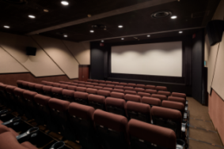

沿 革
1916-1959
映画興行会社として創業
| 1916年（大正5年） | 小林商会 設立 |
| 1928年（昭和3年） | 三葉興業社 設立 |
| 1940年（昭和15年） | 小林喜三郎「日本映画常設館連盟」会長に就任 |
| 1942年（昭和17年） | 有限会社三葉興業社 設立 |
| 1947年頃（昭和22年） | 浦和パレス座 開館 |
| 1950年（昭和25年） | 蒲田パレス座 開館 |
| 1951年（昭和26年） | 目黒パレス座 開館 |
| 1951年（昭和26年） | 新宿パレス座 開館 |
| 1952年（昭和27年） | 三葉興業株式会社 設立 小林眞賛雄 代表取締役に就任 |
| 1954年頃（昭和29年） | 蒲田帝都座 開館 |
| 1956年（昭和31年） | 渋谷パレス座 開館 |
| 1904年（明治37年） | 日露戦争 勃発（1905年終戦） |
| 1915年頃（大正4年） |
第一次世界大戦の影響で輸出が増え好景気となる |
| 1923年（大正12年） | 関東大震災 |
| 1926年（昭和元年） | 年号が大正から昭和へ |
| 1927年（昭和2年） | 東京地下鉄道 開業(上野～浅草間) |
| 1929年（昭和4年） | 世界大恐慌 |
| 1931年（昭和6年） | 満州事変 勃発 |
| 1939年（昭和14年） | 第二次世界大戦 勃発 |
| 1945年（昭和20年） | 東京大空襲 |
| 第二次世界大戦終戦 | |
| 1953年（昭和28年） | 日本でテレビ放送開始 |
1960-1999
映画興行から不動産業へ
| 1966年（昭和41年） | 目黒パレス座 閉館 |
| 1970年（昭和45年） | 蒲田帝都座 閉館 |
| 1985年（昭和60年） | 浦和パレス座 閉館 |
| 1986年（昭和61年） | 建て替えの為 新宿パレス座 閉館 |
| 1988年（昭和63年） | 新宿三葉ビル 竣工 |
| 1990年（平成2年） | 建て替えの為 渋谷パレス座 閉館 |
| 1992年（平成4年） | 渋谷三葉ビル 竣工 渋谷シネパレス 開館 |
| 1995年（平成7年） | 蒲田パレス座 閉館 |
| 1960年（昭和35年） | カラーテレビ本放送開始 |
| 1964年（昭和39年） | 東京オリンピック開催 |
| 1970年（昭和45年） | 大阪万博開催 |
| 1972年（昭和47年） | 札幌オリンピック開催 |
| 1973年（昭和48年） | 第一次オイルショック |
| 1978年（昭和53年） | 第二次オイルショック |
| 1983年（昭和58年） | 東京ディズニーランド開園 |
| 1989年（平成元年） | 年号が昭和から平成へ |
| 消費税３％導入 | |
| 1991年頃（平成3年） |
バブル経済崩壊 |
| 1993年（平成5年） | 日本初のシネマコンプレックスが開業 |
2000~
新しい時代へ
| 2001年（平成13年） | 小林力 代表取締役に就任 |
| 2003年（平成15年） | 渋谷シネパレス2スクリーンに拡張 |
|  | |
| 2012年（平成24年） | 麹町三葉ビル 竣工 |
| 2018年（平成30年） | 渋谷シネパレス 閉館 |
| 2018年（平成30年） | 小林力「全国興行生活衛生同業組合連合会」会長に就任（～2020年） |
| 2020年（令和2年） | 本社を新宿から麹町に移転 |
| 2020年（令和2年） | 小林力「新宿区商店会連合会 西新宿商興会」会長に就任 |
| 2001年（平成13年） | アメリカ同時多発テロ発生 |
| 2011年（平成23年） | 東日本大震災発生 |
| 2014年（平成26年） | 消費税が8%となる |
| 2016年（平成28年） | Netflix社が日本でサービスを開始 |
| 2019年（平成31年） | 年号が平成から令和へ |
| 2019年（令和元年） | 消費税が10%となる |